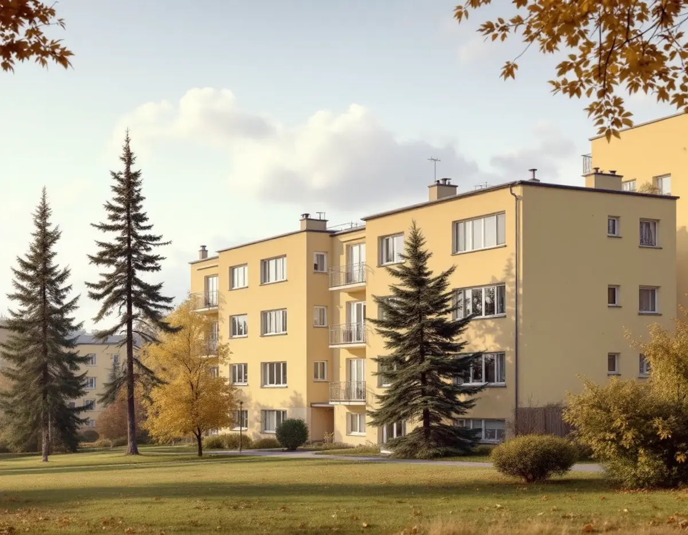
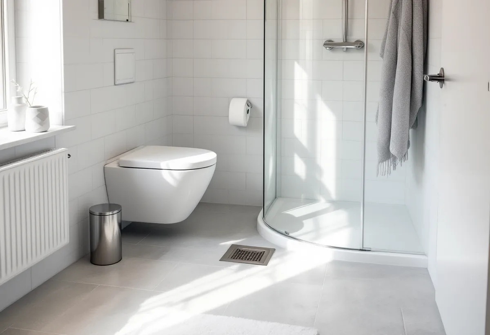
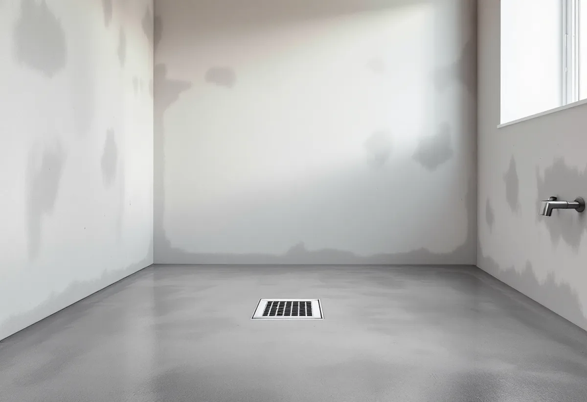

Platsbesök
Vi ser badrummet, golvbrunnen och stammarna och frågar efter stadgarna.
I Midsommarkransen och på Hägerstensåsen är de flesta bostäder bostadsrätter, och där avgör styrelsen och stadgarna en stor del av badrumsrenoveringen. Geal Entreprenad AB renoverar badrum i lägenheter och villor i Hägersten och går igenom vad som är ditt och vad som är föreningens innan rivningen börjar.

Stadens områdesfakta för 2025 visar 4 363 bostadsrätter i flerbostadshus i Midsommarkransen, 2 031 på Hägerstensåsen och 1 775 i stadsdelen Hägersten. Samtidigt finns 955 småhus med äganderätt i Hägersten. Badrummet i en lägenhet och badrummet i en villa följer därför olika regler, och vi börjar med att reda ut vilket som gäller.
Bostadsrättslagen kräver styrelsens tillstånd för åtgärder i lägenheten som innefattar ingrepp i bärande konstruktion, installation eller ändring av ledningar för avlopp, värme, gas eller vatten och installation eller ändring av ventilation. Styrelsen får bara vägra om åtgärden är till påtaglig skada eller olägenhet för föreningen. Stockholms stad råder dig att kontakta styrelsen innan du börjar planera att flytta badrummet.

Du behöver inte bygglov för att flytta ett badrum, skriver Stockholms stad. Men en anmälan och ett startbesked krävs om flytten påverkar bärande konstruktion eller brandskydd, om ventilationen ändras väsentligt eller om en ny VA-stam tillkommer i ett nytt schakt. Vid ett stambyte där installationerna byts i samma läge behövs normalt ingen anmälan.
Oavsett anmälan ska arbetet uppfylla de tekniska egenskapskraven, och vid ett stambyte får tillgängligheten inte försämras, till exempel genom att golvet i badrummet höjs eller att dörröppningen blir för smal. Vi planerar höjderna så att tröskel och golv fungerar mot hallen.
I en bostadsrätt ger Skatteverket rotavdrag för arbete innanför bostadens tak, väggar och golv som du ansvarar för enligt stadgarna, bland annat att byta golvbrunn, sätta kakel och klinker, installera dusch och toalett och dra vatten- och avloppsledningar som tjänar lägenheten. Inget avdrag ges däremot för att utföra stambyten, flytta eller byta ut avloppsrör eller flytta golvbrunnen.
Det påverkar planeringen. Står golvbrunnen kvar på samma plats blir ROT-frågan enkel, medan en ny planlösning med flyttad brunn och nytt avloppsrör blir dyrare efter avdrag. Vi visar båda alternativen i kostnadsförslaget så att du kan jämföra.
GVK:s branschregler anger att golvet i duschplatsen ska ha ett fall mot golvbrunnen inom 1:150 till 1:50, det vill säga 7–30 millimeter per meter, och att övrig golvyta ska luta 2–10 millimeter per meter. Bakfall får inte förekomma, och tätskiktets uppvik vid dörröppningen ska ligga minst 20 millimeter över golvbrunnens fläns i duschplatsen.
Stora klinkerplattor kräver normalt mindre lutning för att inte ge stora nivåskillnader mellan plattorna. Vi mäter fallet på det spacklade undergolvet innan tätskiktet läggs. Om köket i samma lägenhet kan du läsa under köksrenovering i Hägersten, och om tjänsten i stort under badrumsrenovering.
Vill du flytta köket och badrummet samtidigt påminner Stockholms stad om att ventilationskanalens sammanlagda mått måste vara tillräckligt stort innan badrumskanalen används som kombinerad imkanal för köket och frånluftskanal för badrummet. Köket behöver tillräcklig frånluft och ska uppfylla kraven för imkanal.
Staden råder dig att rådgöra tidigt med skorstensfejarmästaren om förutsättningarna för en ny eller ändrad ventilationskanal. I en bostadsrätt är kanalerna dessutom ofta gemensamma för flera lägenheter, och då är det föreningens sak.

Vi ser badrummet, golvbrunnen och stammarna och frågar efter stadgarna.
Du får en beskrivning av ändringarna att lämna till styrelsen.
Alternativ med kvarstående och flyttad golvbrunn står var för sig.
Gamla skikt rivs och golvet byggs upp med rätt fall.
Tätskikt enligt branschreglerna, sedan kakel, klinker och porslin.
Vi går igenom badrummet och lämnar dokumentationen.
Avdraget är högst 30 procent av arbetskostnaden, högst 50 000 kronor per person och år och högst 75 000 kronor tillsammans med rutavdrag. Material och resor ger inget avdrag.
Äger du en villa i Hägersten gäller småhusreglerna, där bland annat installation av dusch, toalett, kakel- och klinkersättning och indragning av vatten- och avloppsledningar ger avdrag.
Om golvbrunnen och toaletten står kvar, vad som döljer sig under det gamla golvet, rummets storlek, ytskikt och porslin och vad föreningen redan gör i sitt stambyte. Efter ett gratis platsbesök får du ett skriftligt kostnadsförslag.
Tätskikt, golvbrunn, el, VVS och intyg.
Badrumsrenovering i Stockholm →Takbyte, takbesiktning och plåtarbeten.
Takläggare i Hägersten →Mälarhöjden, Hägerstensåsen och tre epoker av villor.
Takrenovering i Hägersten →Kuperad villastad och vattentryck.
Attefallshus i Hägersten →Kuperad tomt, stödmur och dränering.
Byggföretag i Hägersten →Trävillor, färglager och skonsam färgborttagning.
Fasadmålning i Hägersten →Småstugor, typritningar och panel.
Fasadrenovering i Hägersten →Villorna, kartan och spröjsen.
Fönsterbyte i Hägersten →Fönster från olika epoker.
Fönsterrenovering i Hägersten →Golv i källare och suterrängvåning.
Golvläggare i Hägersten →Slipa och spara parketten i en äldre lägenhet.
Golvslipning i Hägersten →Efterkrigstidens lägenheter och asbestprov.
Köksrenovering i Hägersten →Lägenheter, villor vid Mälaren och radhus.
Målare i Hägersten →Låglutande tak och takavvattning i Hägersten.
Plåtslagare i Hägersten →Verandor, dörrar och snickeridetaljer på villan.
Snickare i Hägersten →Samma material eller ett nytt.
Takbyte i Hägersten →Villastad, radhuslänga och brandskydd.
Tillbyggnad i Hägersten →Villan i Mälarhöjden eller lägenheten.
Totalrenovering i Hägersten →